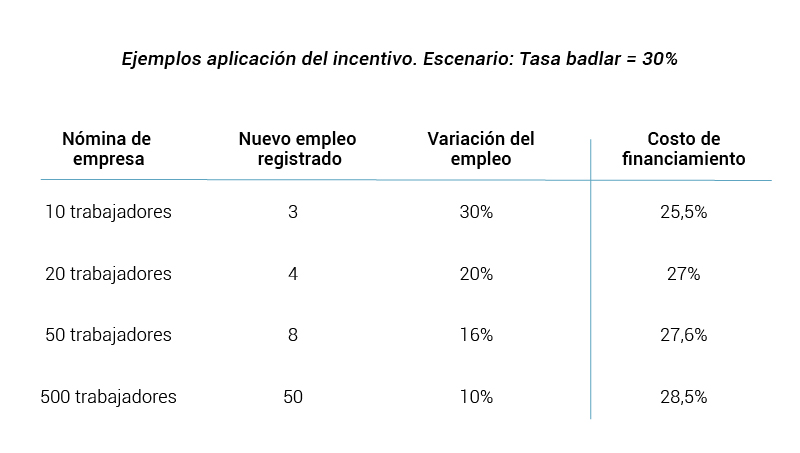
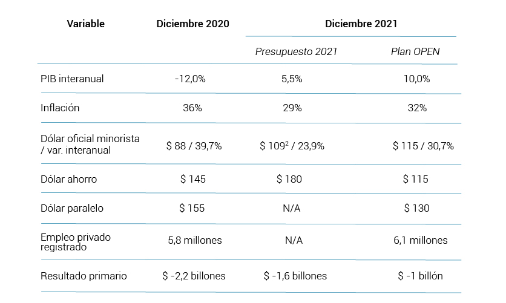

Publicado el 21/12/2020
La crisis financiera y productiva desatada por el Gobierno de Cambiemos se vio gravemente profundizada por la pandemia del COVID-19 y también por errores en el manejo macroeconómico, sobre todo las medidas implementadas el 16 de septiembre del 2020, poco después del exitoso canje de deuda local y extranjera, que llevaron la profundización de la corrida cambiaria, mayor brecha y caída de reservas (nos referimos al recargo extra del 35% en la compra de dólar ahorro, nuevas restricciones del cepo, renegociación forzosa de pasivos privados, etc.).
Actualmente la economía argentina lucha por salir de una recesión sumamente larga, con altos niveles de inflación (37% interanual), déficit fiscal (aprox. 7% del PBI), altos niveles de desocupación (superior al 15%) con su correlato en la pobreza, la desigualdad y caída del salario real.
La acumulación de regulaciones en el mercado cambiario no han logrado estabilizar la macro, sino por el contrario, han profundizado la incertidumbre y el apetito de los sectores exportadores por forzar una nueva devaluación, en un contexto donde el dólar oficial acumula un aumento del 390% desde diciembre de 2016 y la inflación para el mismo período resultó del 254%. Nuestro Monitor de Competitividad revela que dados los precios de los commodities y la caída de las retenciones, los exportadores se encuentran en actualmente teniendo mayores ganancias que en los cuatro años previos, lo que sugiere que el problema actual no son los incentivos.
Devaluación e inflación constituyen un círculo vicioso que lleva al desorden nominal de la economía, profundizado por la implementación de los impuestos a la compra de dólar ahorro y las altas tasas de interés. Si bien la proyección del Presupuesto 2021 es un dólar mayorista de $102 a finales del próximo año, la tendencia actual lo empujaría en el mejor de los casos a un valor de $120 lo que equivale a un minorista cercano a los $128 y un dólar ahorro de $210.
Ante este panorama, surgen tres posibles orientaciones a grandes rasgos:
Aun dentro de la estrategia C, no consideramos estas medidas apropiadas ni suficientes, en tanto simultáneamente alimentan la inflación (por la suba del dólar oficial) y enfrían la recuperación (por menor gasto y mayores tasas). Por lo cual desde el Observatorio de Políticas para la Economía Nacional proponemos tres medidas para salir de la crisis y reactivar la economía.
Objetivos a alcanzar
Entendemos que estos 7 objetivos pueden alcanzarse simultáneamente, sin emitir dinero ni incrementar la deuda pública. De más está decir que lograr estos objetivos implicaría la estabilización macroeconómica y la reactivación del mercado interno, condiciones sine-qua-non para impulsar un círculo virtuoso de crecimiento económico - mayor recaudación - crecimiento del salario real - más inversión.
Las medidas económicas que proponemos para alcanzar estos objetivos son:
A continuación explicamos en detalle las medidas señaladas:
1. Estrategia de “Convergencia Nominal”
La estrategia de convergencia nominal consiste en eliminar progresivamente el círculo vicioso devaluación - inflación, empezando por la reducción progresiva de los impuestos al dólar que actualmente fijan un piso de la brecha cambiaria del 65% por la suma del Impuesto PAIS (30%) y el adelanto de Ganancias (35%).
Nuestra propuesta es reducir diariamente un 0,2% la carga impositiva sobre el dólar oficial, lo que redundaría en una reducción mensual del 5% lo que implica llegar a diciembre del 2021 con los impuestos al dólar prácticamente eliminados.
Simultáneamente, proponemos una estrategia de reducción paulatina tanto en el ritmo de depreciación del oficial como en las tasas de interés a partir de enero 2021, manteniendo a éstas siempre por encima. La meta que planteamos es la convergencia del dólar oficial y el dólar ahorro alrededor de los $115 hacia comienzos del 2022. Esto repercutirá en una desaceleración de la suba de precios a partir de los meses de abril / mayo, hoy ubicada por encima del 3% mensual y alimentada por la depreciación constante del peso.
2. Quantitative Easing en el mercado de bonos
Parte de la estrategia actual para bajar la brecha consiste en la intervención por parte del BCRA y ANSES en el mercado de bonos, vendiendolos en pesos, lo que empuja su cotización hacia abajo. Nuestra propuesta es que el BCRA recompre en dólares el mismo volumen de bonos que vende en pesos, haciendo subir su cotización en moneda extranjera y manteniendo una tenencia neutra. Esta política de compra en el mercado secundario ha sido aplicada por la FED y otros bancos centrales en el marco de crisis financieras post-2008. Los efectos beneficiosos para nuestra economía serían múltiples:
a) La suba del precio en dólares de nuestra deuda implica una caída del riesgo país, lo que facilitará el endeudamiento que necesitan las empresas privadas en el marco de la reactivación.
b) Comprar el mismo volumen de bonos que vende, permite mantener la composición de la deuda pública inalterada, mientras que la política actual implica incrementar la deuda en manos privadas en desmedro de las tenencias pùblicas.
c) Este arbitraje implica ganancias para el BCRA, dadas por la brecha cambiaria con el dólar oficial. En la práctica se estará comprando dólares al precio oficial y vendiendolos al precio bolsa, lo que permite un financiamiento genuino del déficit cuasifiscal.
d) La brecha disminuirá por dos frentes: por mayor demanda de pesos y mayor oferta de dólares. Con los precios actuales, una caída diaria del 0,5% en pesos y un aumento del 0,5% en dólares genera un descenso de $1,5 en el dólar financiero.
e) Dado el volumen del mercado oficial y el volumen del mercado financiero, esta política tendría un costo relativamente bajo. Un desembolso diario de USD 10 millones sería suficiente para orientar el mercado. Implica utilizar unos USD 200 millones de reservas al mes, pero con una brecha del 80% implica la absorción de $12.800 millones, que se traducen en menor emisión.
f) Estas señales marcarán un rumbo al mercado que incrementará la demanda privada de bonos en dólares y la oferta de los distintos dólares paralelos , al percibir un sendero de convergencia hacia un valor gravitante en torno a $115.
3. Incentivo extraordinario a la creación de empleo
Despejadas las expectativas en el frente cambiario-financiero, resta generar los incentivos adecuados para que el capital se vuelque a la producción. Proponemos para ello sancionar un incentivo extraordinario consistente en reducir los costos de financiamiento a las empresas que generen empleo registrado a partir del 01/01/2021.
Esta medida se aplicará bajo la siguiente fórmula:
Tasa financiada = Tasa Badlar*(1-0,5*∆Empleo registrado de la empresa) para ∆Empleo registrado < 100%
Tasa financiada = Tasa Badlar*0,5 para ∆Empleo registrado ≥ 100%
Esto implica una reducción del 1% de la tasa por cada dos puntos porcentuales que crezca el empleo registrado de una empresa. De esta forma se fomentará la creación de empleo de calidad sobretodo en el sector PyME. Para ejemplificar: existiendo una tasa badlar del 30%, una empresa de 20 trabajadores podría acceder a tasas de financiamiento del 27% al ampliar su planta en 4 trabajadores.

Lo que se busca a través de esta medida es generar una herramienta que permita a las empresas tener una forma de acceder al capital para financiar inversiones con el objetivo de volver a la senda de la producción y la generación de valor agregado. Esta política puede ser aplicada definiendo montos máximos en función de la cantidad de trabajadores totales formales de cada una (como proxy de su escala productiva). De esta manera se generan incentivos para la formalización del empleo sin crear distorsiones que beneficien a las empresas con mayor proporción de trabajadores no registrados. A su vez, el límite superior plantea que la tasa podrá reducirse hasta la mitad (en nuestro ejemplo, una tasa del 15% en caso de duplicar el plantel).
Los altos niveles de desempleo son gravemente preocupantes. Esto requiere atención inmediata. Si bien un sector del mainstream económico plantea que la razón se debe a los elevados costos laborales y la presión impositiva, nuestra visión difiere. En nuestros informes mensuales de salarios, hemos evidenciado que estas premisas no se cumplen, estando los salarios en general en niveles bajos, perdiendo poder adquisitivo en los últimos años. Es decir, el problema del empleo no son los costos, sino una actividad económica deprimida y sin incentivos para la producción. Las medidas de reactivación de la demanda sumadas a políticas de financiamiento con bonificación a la generación de trabajo son una combinación interesante para revertir el panorama, en un contexto de convergencia nominal y baja progresiva de tasas.
De esta forma se alinearán los incentivos monetarios, cambiarios y fiscales para orientar el capital a la inversión productiva y la creación de empleo. Confiamos en que el costo del incentivo a la creación de empleo es más que compensado por los mayores retornos impositivos propios del crecimiento económico.
Por otro lado, es inevitable referirnos a la necesidad de mejorar el saldo exportador en el mediano plazo, para defender el superávit comercial alcanzado en los últimos años. Sabemos que hay una correlación casi lineal entre el incremento de la actividad y el crecimiento de las importaciones. Esto último a priori no debería considerarse nocivo, si las exportaciones se movieran a la par. Sin embargo, desde hace ya varias décadas que la matriz exportadora de nuestro país no se modifica, es decir, continuamos vendiendo al exterior mayoritariamente commodities vinculadas al agro. Esto nos sitúa en una situación de dependencia de la mejora de los términos de intercambio para que, vendiendo lo mismo, tengamos mayor entrada de divisas. Esto ha generado, vía restricción externa, serias complicaciones para mantener procesos prolongados de crecimiento y generación de empleo de calidad.
Es difícil imaginar la viabilidad de un país bajo estos parámetros. Por ende, es necesario pensar de qué forma incrementar y diversificar las exportaciones. En esta discusión aparecen diversas actividades potenciales, algunas de las cuáles tienen una carga de contaminación importante. Es notorio que no hay que ignorar este hecho, aunque también es cierto que habrá que discutir qué nivel de contaminación es tolerable y bajo qué objetivos. A priori, un país con complicaciones estructurales como el nuestro tiene serias complicaciones para rechazar de plano el 100% de estas opciones. Por último, hay sectores menos polémicos a los cuáles apostar como la biotecnología en donde nuestro país tiene potencial para crecer dado su desarrollo relativo respecto de nuestra región.
Metas Plan OPEN
A continuación presentamos nuestras metas sobre las principales variables económicas, comparadas con las metas planteadas por el Gobierno en el Presupuesto 2021. Nuestro plan económico se basa en una convergencia de las variables nominales basada en una mayor depreciación e inflación en los primeros meses del año y una posterior desinflación desde abril/mayo, junto con los mencionados incentivos a la inversión y la creación de empleo privado. El resultado sería una inflación anual ligeramente superior a la planteada (a nuestro entender, más realista) pero decreciente, con mayor estabilidad financiera, empleo, PIB y recaudación. Creemos que con las medidas planteadas es posible alcanzar un nivel productivo cercano al tercer trimestre del 2019, lo que implicará un crecimiento respecto al 2020 del 10%.

1.Insignificante frente al costo actual, donde el BCRA perdió USD 1.500 millones en octubre y USD 1.200 millones en noviembre.
2.Considerando un margen sobre el TCN mayorista del 6,5%